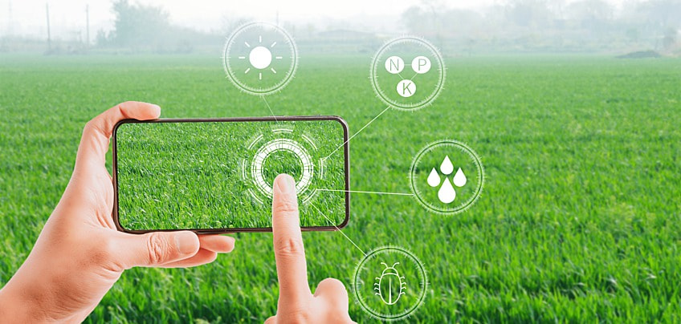
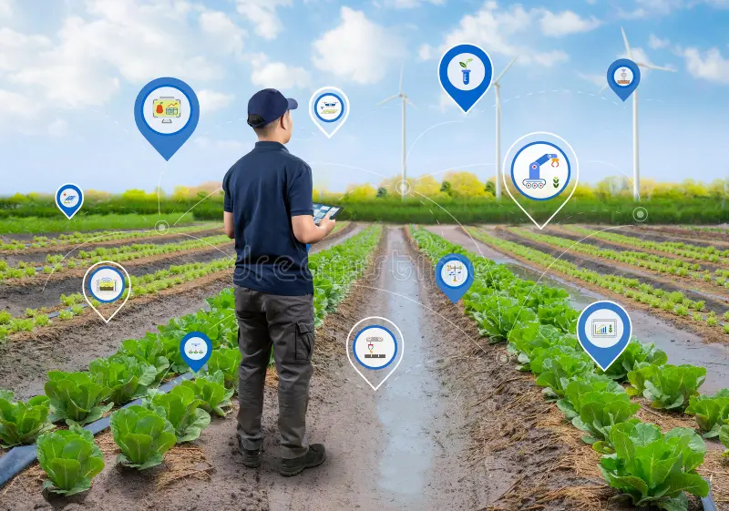
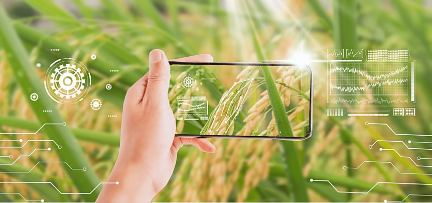

Introduction

Agriculture, the backbone of many economies, has witnessed a paradigm shift with the advent of Information Technology (IT). Traditionally reliant on manual labor and conventional techniques, the agricultural sector now embraces innovative IT solutions to tackle challenges like food security, climate change, and resource management.
IT in agriculture involves the use of cutting-edge tools like Geographic Information Systems (GIS), Artificial Intelligence (AI), and the Internet of Things (IoT) to modernize farming practices. These technologies enable farmers to monitor crop health, predict weather patterns, and optimize resource usage, leading to sustainable and efficient farming.
From satellite imagery guiding large-scale irrigation systems to mobile applications offering real-time advice to small-scale farmers, IT bridges the gap between traditional agriculture and modern-day needs. The integration of digital tools is not just transforming farming operations but also enhancing global food supply chains, ensuring traceability and transparency from farm to fork.
As we stand on the cusp of an agricultural revolution, IT's role is pivotal in addressing global food demands, preserving biodiversity, and fostering resilience in the face of climate uncertainties.
Applications

Information Technology has unlocked a wealth of possibilities in agriculture, driving efficiency, productivity, and sustainability. Below are the key areas where IT is making a significant impact:
- Precision Farming: Using GPS technology, drones, and sensors to monitor and optimize field conditions.
Example: GPS-enabled tractors for precise sowing.
Benefits: Reduces waste, saves resources, and boosts yields.
- Drone Technology: Using drones to monitor crops, irrigate fields, and manage pests.
Example: Drones with thermal cameras detect water stress.
Benefits: Saves time, improves accuracy, and reduces labor.
- Data Analytics: Analyzing weather, soil, and crop data to predict outcomes and improve planning.
Example: Software like Climate FieldView.
Benefits: Reduces risks and enhances productivity.
- IoT in Agriculture: Real-time monitoring of crops and livestock using connected devices.
Example: IoT sensors in greenhouses adjust climate conditions.
Benefits: Enables automation and real-time insights.
- Blockchain in Supply Chains: Enhancing traceability from farm to table.
Example: IBM’s Food Trust for tracking product origins.
Benefits: Ensures transparency, trust, and food safety.
- Mobile Applications: Providing farmers with market insights, weather updates, and crop management tools.
Example: Apps like e-Krishi and FarmLogs.
Benefits: Empowers small-scale farmers and fosters knowledge-sharing.
Future Scope

The future of agriculture is being reshaped by rapid advancements in Information Technology. As global challenges such as climate change, food security, and resource depletion intensify, IT will play a critical role in ensuring sustainable and efficient agricultural practices. Below are the key trends and innovations shaping the future of agriculture:
- Artificial Intelligence (AI) and Machine Learning (ML): Predictive analytics, AI-powered robots, and automated decision-making are driving precision agriculture.
Impact: Enhanced productivity, reduced waste, and better environmental resilience.
- Blockchain for Food Security and Transparency: Blockchain ensures transparent tracking of produce and fair trade through smart contracts.
Impact: Increased trust, reduced fraud, and improved global trade.
- Advanced IoT Integration: Future IoT systems will enable real-time monitoring of crops and livestock, enhancing operational efficiency.
Impact: Cost reduction, improved decision-making, and resource optimization.
- Vertical Farming and Urban Agriculture: IT-enabled vertical farms will maximize yield in urban areas through hydroponics and aeroponics.
Impact: Reduced land use, fresher produce, and lower carbon emissions.
- Genomics and Biotech Integration: IT will accelerate crop improvement using data-driven genomics and gene editing technologies.
Impact: Higher yields, greater adaptability, and improved crop nutrition.
- Autonomous Farming Systems: AI-powered autonomous tractors, drones, and robots will become essential in farming.
Impact: Scalable farming, reduced labor needs, and efficient operations.
- Climate-Adaptive Technologies: IT tools will mitigate climate change effects through real-time climate monitoring and adaptive planning.
Impact: Greater resilience and sustainable farming.